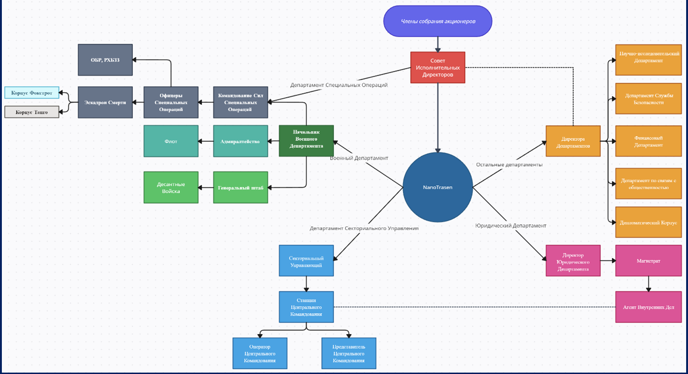

NanoTrasen – это одна из самых больших корпораций, занимающаяся научными изысканиями, а также продажей и производством сверх технологичных товаров, не имеющих аналогов в галактике. Также не мало важным будет указать то, что большинство современных технологий вышли из-под крыла NT и производятся за счёт патентов проданных NanoTrasen другим корпорациям и странам.
Корпорация в наши дни
В наши дни NanoTrasen занимается активным изучением «Фронтира» или же просто дальних секторов, в которых были обнаружены скопления артефактов так называемых «Древних», для этого она строит множество станций серии: Space Station. Ко всему прочему NT не теряет позиций в открытии прорывных технологий, а также в производстве штучного, высоко технологичного товара, который поступает на рынки всей галактики. Также NanoTrasen является не только местом работы, но и домом для представителей множества рас.
Полное описание корпорации
Вектор развития NanoTrasen был задан ещё на земле, во времена активного освоения солнечной системы, и поскольку NanoTrasen появилась при слиянии четырёх корпораций, каждая из которых занимала свою нишу, она до сих пор является лидером не только в технологиях и всём, что с ними связано, но и занимает не последнее место в военном плане.
Сейчас же мы с полной уверенностью можем сказать, что NanoTrasen – это корпорация гигант пережившая не один кризис и конфликт, вовлёкший в себя множество стран и корпораций, а также приведший к краху оных. Сама корпорация представляет собой скорее некое «квазигосударство», а всё потому, что она имеет в своём составе множество систем с установленными на них законами, которые действуют только на территории принадлежащей самой корпорации. Также NT обладает армией и флотом, которые имеют в своём составе корабли и обмундирование не доступное простым корпорациям. Данное обмундирование в некоторых аспектах превосходит аналоги других корпораций и стран, при этом NanoTrasen не чурается использовать свои вооружённые силы для решения некоторых щепетильных вопросов и из-за этого, она в кругах своих недоброжелателей получила ярлык палача, но при этом NanoTrasen имеет практически идеальную репутацию.
Общество и корпорация
Говоря про взаимоотношения между NanoTrasen и обществом, стоит указать, что NT имеет в своём составе отдельный департамент занимающийся исключительно обелением облика NT, а также активной пропагандой самой корпорации. Именно поэтому большинство населения галактики думает, что работа на NanoTrasen – это невероятная удача.
Не мало важным фактом будет указать то, что товары NanoTrasen активно рекламируются самой корпорацией и присутствуют во множестве художественных произведений, что благоприятно сказывается на продажах.
Иерархия
Если коротко описывать иерархию NanoTrasen, то у неё, как и у всех корпораций, присутствует собрание акционеров. В него входят 6 человек имеющих в совокупности 83% всех акций, остальные акции имеющиеся на бирже, а это 17% являются привилегированными. Сам совет акционеров представляет собой круг людей близко знакомых между собой, при этом трое из них и вовсе являются родственниками. Ко всему выше сказанному они не управляют корпорацией на прямую, ведь для этого у них есть совет исполнительных директоров задачей которого является урегулирование многих щепетильных вопросов и управление самой корпорацией.
Сама корпорация поделена на департаменты, каждый из которых ответственнен за своё направление, при этом они тесно взаимосвязаны и неправильное функционирование хоть одного из департаментов способно привести к колапсу в другом.
Если коротко говорить о самих департаментах, то:
Военный департамент или департамент вооружённых сил – занимается защитой интересов корпорации, сюда может входить как охрана границ копрорации, так и участие в военных действиях.
Департамент Секториального управления – являет собой огромный аппарат в задачи которого входит координирование, контроль и в некоторых случаях прямое управление объектами корпорации. Данный департамент наделён одними из самых широких полномочий позволяющих данному департаменту эффективно выполнять свои задачи.
Юридический департамент – имеет в своём составе одних из самых высококвалифицированных юристов и бюрократов в галактике в задачи которых входит выполнение законодательной и судебной функций. Также в некоторых случаях все эта когорта юристов и бюрократов защищает интересы NT в Галактическом Суде.
Дипломатический корпус (департамент) – отвечает за урегулирование и налаживание отношений с другими копрорациями или государствами.
Департамент по связям с общественностью – в его зону ответственности входит реклама продукции NanoTrasen, представление продукции на презентациях, а также проведение некоторых общественных реформ на объектах NT.
Финансовый департамент – занимается подсчетом доходов корпорации, отслеживанием её расходов и распределением денежных масс между департаментами. Считается самым бессердечным департаментом из всех, поскольку их единственной целью является получение как можно большего капитала так, что во всех проблемах с обеспечением можете винить именно этот департамент.
Департамент службы безопасности – занимается внутренней охраной объектов NanoTrasen, а также предоставляет защиту выскопоставленным сотрудникам. Сотрудники службы безопасноти, агенты Синего Щита, а также личная охрана (не Синий Щит), являются представителя именно этого департамента. Основной причиной отделения этого департамента от департамента вооружённых сил является факт того, что Сотрудники СБ и БЛ не принимают участия в военных конфликтах, поскольку они являются скорее охранниками и телохранителями, чем проффесиональными военными.
Научно-Исследовательский департамент – являет собой сердце NanoTrasen, именно он ответственнен за все патенты и практически за всю прибыль когда-либо полученную NT ведь NanoTrasen в первую очередь научная мегакорпорация.
Активы корпорации
Административный актив
Различные планетарные базы и станции, основной задачей которых является управление другими объектами в регионе или секторе.
Также сюда входит основной административный актив – штаб квартира корпорации, где принимаются все основные решения и где заседает исполнительный совет директоров.
Ко всему прочему в данный список входят корабли Генерального директората (членов совета исполнительных директоров) или личные лайнеры членов собрания акционеров.
Бизнес-актив
К данному классу активов относятся разнообразные станции, на которых располагаются региональные менеджеры, отвечающие за продажу, рекламирование.
Исследовательский актив
Это основной актив NanoTrasen, приносящий больше всего прибыли и на содержание которого тратятся колоссальные суммы. Является вторым по распространённости среди объектов компании, приносящей им новые технологии и знания, которые позже превращаются в деньги.
Экспериментальный актив (внеклассовый)
Данный тип активов не занимается какой-либо определённой деятельностью, скорее работа подобных активов направлена на тестирование новых технологий.
Коммерческий актив
Под это определение попадают все объекты, которые жизненно важны для NanoTrasen за счёт торговой или коммерческой деятельности, которая не попадает под любое другое определение.
Медицинский актив
Станции, планетарные объекты или даже корабли, основной целью которых является предоставление медицинской помощи. Центры обучения как простых медиков, так и центры по переподготовке ОБР – медиков.
Оборонный актив
Класс активов NT, сжигающий добрую часть их бюджета. Имеет в своём распоряжении корабли с максимальным рангом O – omicron и занимающиеся защитой и нападением.
Стоит обратить внимание на то, что не каждый объект, имеющий вооружённую охрану, а иногда и средства активной обороны, является частью данного актива! Примером данного исключения могут служить внеклассовые корабли такие как: колониальный корабль, исследовательский крейсер или иные корабли не военного назначения несущие на себя вооружение, основной целью которого является не нападение, а превентивная защита от агрессоров.
Транспортный актив
В данный класс активов входят грузовые, снабженческие и пассажирские судна и станции, являющиеся перевалочными пунктами для товаров. Территории
Территории NanoTrasen являются достаточно обширными, чтобы их можно было увидеть на карте галактики, хотя чести ради стоит сказать, что большая часть этой территории является не более чем превентивным намерением на обладание оными. Также к территориям NanoTrasen можно отнести их филиалы на планетах находящихся во владениях государств, поскольку по соглашению подписываему при открытии нового офиса, территория в самого объекта корпорации территории в радиусе одного километра от него являются собственностью корпорации.
Политика корпорации
Политика NanoTrasen обширна и включает в себя не только отношения корпорациями, но и с государствами. Тут будут представлены отношения NanoTrasen и основных человеческих государств. (позже добавим гос.ва ксено)
ОПЗ – на данный момент NT поставляет на рынок ОПЗ, огромное число высокотехнологичной продукции производство, которой является экономически невыгодным для ОПЗ. Также NT предоставляет ОПЗ большое число патентов на свои технологии по несколько сниженным процентам из-за некоторого давления со стороны властей ОПЗ.
СНК – не смотря на достаточно крепкие торговые отношения NT с ОПЗ, NanoTrasen является почти единственным поставщиком новейших технологий для ССК, из-за чего получает с этого сверхприбыли. Ко всему прочему NanoTrasen тайно поддерживает правительство ССК, отдавая им некоторые из своих объектов в пользование.
СССП – из-за того, что СССП считает NanoTrasen псом капитализм на коротком поводке у ОПЗ, все официальные отношения между ними отсутствуют напрочь. Но всё же многие партийные деятели не могут, не замечать, что продукция NanoTrasen на голову обходит всё, что производит сама СССП и поэтому в тайне от своих сограждан производят закупки некоторого оборудования.
ИМПЕРИЯ – торговые отношения между NT и ИМПЕРИЕЙ отсутствуют как данность из-за того, что для ИМПЕРИИ NanoTrasen является не более, чем грязными, продажными людьми не имеющими никакого отношения к их великой идее могущества и превосходство единой человеческой расы на всеми Untermensch. Для NanoTrasen же все заявления ИМПЕРИИ являются не более чем поводом для шуток поскольку, на руководящих должностях NanoTrasen уже давно укрепились многие ксеносы.
Если говорить про отношения с корпорациями, то отношения с корпорациями большой пятёрки (впишем сюда корпы, которые будут гигантами) являются скорее нейтральными, поскольку конфликт между ними приведёт к огромным потерям и является настолько нецелесообразным насколько это вообще возможно, поскольку даже на уровне разделения рынка их интересы особо не пересекаются.
С мелкими корпорациям отношения NanoTrasen разнятся от партнёрских, до враждебных.
Краткая история
История NanoTrasen начинается на земле во времена второй холодной войны, представлявшей из себя, как конфликты между крупными государствами на территориях государств поменьше, так и конфликтами между корпорациями. В эти времена на земле существовали четыре корпорации родоначальника пришедшие к выводу о том, что объединение – это единственный шанс позволяющий продолжить их функционирование. Так зародилась W.E.G.A. – коалиция состоящая из научных компаний Typhon Ray и Nano-Biology, космического агенства Ad Astra и ЧВК LION. Изначально об каком либо объединении не шло и речи, но по прошествии времени, при активно сотрудничестве между собой они заняли лидирующие позиции в космической исследовательский области. Именно благодаря своему лидерству им было позволено основать колонию на марсе, где позже был найден Фарон из которого, по прошествии времени была получена Плазма. К сожалению W.E.G.A. скрыла информацию об этом элементе, но позже об их открытии стало известно ведущим мировым альянсам, которые обложили W.E.G.A. штрафами и санкциями, а также позже запретили им покупать МД (межзвёздные двигатели). Немногим ранее, чтобы устоять под нападками стран, коалиция принимает решение об объединении в одну корпорацию получившей название NTAS. Немногим позже NTAS удаётся обходными путями выбить себе право на покупку МД, что позволяет им шагнуть в большой космос.
При исследовании дальнего космоса NTAS обнаруживает первую разумную внеземную жизнь – Унатхи. Данные ящероподобные существа находились на этапе активного освоения своей родной системы, им удалось колонизировать две экзопланеты в их системе, но к сожалению для них, шансов выйти в большой космос у них не было, поскольку при исследовании их системы стало известно, что основной компонент необходимый для функционирования и создания МД – плазма, отсутствует в их родной системе. Сами Унатхи приняли человечество тепло и были рады научится у него чему-то новому.
Много лет спустя NTAS уже активно исследуя одну из зон микросектора обнаруживает газовый гигант с аномальным содержанием плазмы, к сожалению для них, микросектор где он находился уже принадлежал коалиции корпораций SAIT. Не желая отступать от столь лакомой цели NTAS решает наплевав на владельца (SAIT) просто забрать систему себе. SAIT понимая, что NTAS не остановится на достигнутом предпренимает попытку обратить внимание уже сформировавшейся ОПЗ на данную проблему путём, эскалации конфликта и выставления NTAS агрессором в нём. В итоге началась война между корпорацией и объединением в ходе которой NTAS применяет запрещённые политикой «благородной войны» принятой ГООС (Галактической Организацией Объединённых Стран) нейтронные боеголовки уничтожившие огромное число мирного населения. Из-за данного решения NTAS попадает в немилость всего галактического сообщества и принимает решение о реформировании в корпорацию под новым логотипов – NT (NanoTrasen).
Уже ближе к нашему времени NanoTrasen решает проводить исследования в области пустых пространств (систем без звёзд), поскольку при исследовании обнаруженой благодаря ИскИну (Искусственному Интелекту) системы, в ней NanoTrasen наткнулась на скопление многочисленных артефактов так называемых древних. Ради этого NanoTrasen активно исследует фронитир и строит множество космических станций серии Space Station.
Далее для NanoTrasen наступает век потрясений в ходе которого NT проигрывает в войне с магами при этом потеряв всего лишь одну систему и шесть кораблей. Почему NanoTrasen так быстро заключила мир с магами до сих пор остаётся загадкой.
Немногим позже на NanoTrasen проводится серия успешных нападений неким около преступным объединением – Синдикатом. Как и откуда он взялся остаётся большой тайной, но факт остаётся фактом Синдикат до сих пор активно досаждает NanoTrasen и другим корпорациям Большой Пятёрки.
Сейчас же для NanoTrasen наступили относительно спокойные времена в ходе которых она всё также активно осваивает фронтир и строит станции уже новой серии Space Station 14.
Полная история
История NanoTrasen
Экономика
NanoTrasen, является гигантом в мире передовых технологий. Она сконцентрировала свои усилия на производстве штучного, сверх технологичного товара, при этом, NT не занимается производством или добычей полезных ископаемых с целью их дальнейшей продажи. Почти вся статья доходов NanoTrasen состоит из отчислений процентов по представляемыми ими патентами на производство, если говорить коротко, то всё, что вы могли увидеть или потрогать на центральных планетарных системах в пространстве ОПЗ, было произведено с участием технологий NanoTrasen. Но из-за своей специализации на технологиях, NanoTrasen не всегда уделяет достаточно внимания другим отраслям промышленности, таким как тяжёлая промышленность, лёгкая промышленность, товары массового потребления. Поэтому всё, это она закупает у компаний поставщиков, которые рады продавать NanoTrasen эти товары по цене в 2-3 раза уступающей рыночной, поскольку для них сам факт покупки NanoTrasen их товаров, уже делает не плохую рекламу, да и к тому, же их руководству не шибко хочется быть поглощёнными.Военные силы
Военные силы NanoTrasen представлены флотом, армией, службой внутренней безопасности, а также многими специальными подразделениями.
Флот
Флот NanoTrasen, как и флот любой другой корпорации их уровня является личной армией, которой позволено иметь боевые корабли до ранга O-Omicron включительно. По сути, такое ограничение несколько снижает их боевой потенциал, но не смотря на это их флот являет венцом технологий, поскольку все корабли находящиеся на вооружении NT пускай и производились на вервях других корпораций и стран, но модифицировались они на верфях NanoTrasen с применением последних технологических наработок NT недоступных никому более.
Армия
Армия NanoTrasen является скорее неким экспедиционным корпусом, выполняющим работу по охране их планет.
Гвардия
Синий щит, служба безопасности, личная охрана первых лиц, все эти подразделения выполняют одну, не мало важную задачу, они защищают объекты NanoTrasen от посягательства недоброжелателей на них, а также защищают особо важные персоны, смерть которых, может нанести колоссальный урон корпорации.
СПЕЦНАЗ
РХБЗЗ, ОБР, Эскадрон Смерти, всё это - подразделения специального назначения, цель которых, всегда оправдывает средства. Это элита всех вооружённых сил NanoTrasen, на них равняются все без исключения. (позже дополнительно распишем каждое подразделение)
Агент внутренних дел
На заре создания Департамента Внутренних Дел у правительства (ОПЗ?) возникло несколько острых проблем, требовавших немедленного реагирования. Свод Стандартных Рабочих Процедур уже был составлены, подписан Собранием ООН и был приведен в действие. На бумаге. А на деле? На деле на станциях творился хаос. Из всего экипажа космических станций NanoTrasen лишь 30% знало о существовании вышеуказанных сводов правил. Слово хаос было комплиментом для того ужаса, что творился на станции с юридической точки зрения.
Появление юриста
Вследствие этого на станции была создана новая должность - юрист. Юристы должны были следить за соблюдением Стандартов Рабочих Процедур, Корпоративного закона, а также выполнять работу нотариуса и адвоката. На первый взгляд, все юридические нарушения должны были быть устранены. Однако все вышло не так гладко, как планировал Магистрат Юрдепартамента. Если обязанности нотариуса выполнялись более или менее исправно, то с адвокатурой и соблюдением законов все было… Все было плачевно. Служба Безопасности работала круглосуточно, и это ѳ на их способах работы. С правами заключенных никто не считался, приговор выносился за считанные секунды, а суд был скор на расправу. Разумеется, юристы пытались выражать протест, но в лучшем случае их просто игнорировали, а в худшем сажали в камеру с подсудимым. По прибытии на станцию ЦК слово СБ оказывалось весомее слов простого юриста и дело спускали на тормозах. В связи с этим была создана новая должность - Агент Внутренних Дел, ставший неотъемлемой частью командования.